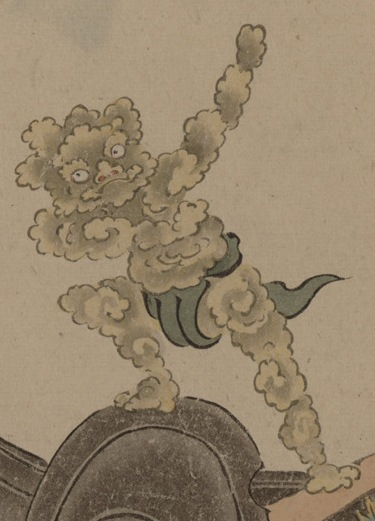

全身が泡のような化物。緑灰色の褌を身につけ、薬研の化物の上に載っている。両手で棒を持つ仕草をしているようにも見える。
出典：親書誌：U426_nichibunken_0154：妖怪絵巻；ヨウカイエマキ／日付：2010／資源識別子：U426_nichibunken_0154_0014_0000
Copyright (c)2010- International Research Center for Japanese Studies, Kyoto, Japan. All rights reserved.